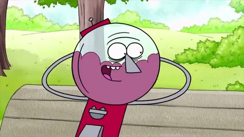

Оживший торговый автомат для жевательными шариками или жвачки, руководитель парка, владельцем которого является Мистер Мэллард. Единственный из главных героев, кто живёт в отдельной квартире, а не на территории парка. В молодости был рестлером и барабанщиком в рок-группе «Волосы на троне», но коллектив этой группы счёл нужным исключить Бенсона. Два друга часто выводят его из себя своими выходками, от чего Бенсон постоянно не доверяет им и пугает, что он их уволит. Сам Бенсон очень ответственный и трудолюбивый сотрудник, что делает его полной противоположностью Мордекая и Ригби. При этом, Бенсон вполне умеет веселиться, в чём гораздо превосходит вышеупомянутую парочку, но эту сторону своей личности проявляет довольно редко. Бенсон очень вспыльчив и склонен к приступам ярости, вследствие чего он становится красным. Он является лучшим другом Попса и поручается за него в связи с его постоянной наивностью и добродушием. В молодости также был чемпионом по настольному хоккею, у него был свой ученик (возможно сын или племянник), погибший во время соревнований. В серии «Эксперт или лжец» выясняется, что он проиграл в телеигре «Скажи это слово», произнеся вместо слова «бандана» слово «бананы», из-за чего долго многие кричали нечто вроде при его появлении «Это же человек-банан!» и кидались в него бананами.